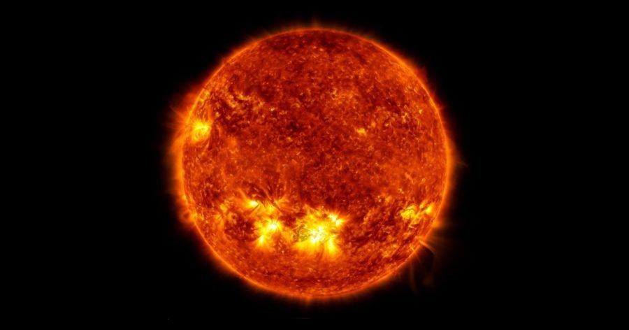

X-1 ပြင်းအားရှိတဲ့ ဆိုလာမုန်တိုင်း တစ်ခု ကမ္ဘာကို တိုက်ရိုက် ရိုက်ခတ်ဖို့ ရှိတယ်လို့ နာဆာအဖွဲ့ကြီးရဲ့ သတိပေးချက် အရ သိရှိရပါတယ်။
အင်အား ကြီးမားတဲ့ နေမီးတောက်ကြီး တစ်ခုကို မနေ့က အောက်တိုဘာ ၂၈ ရက်နေ့က ထောက်လှမ်း ရရှိ ပြီးတဲ့နောက် နာဆာက ဒီ သတိပေးချက်ကို ထုတ်ပြန်လိုက်တာ ဖြစ်ပါတယ်။ ဒါဟာ ဒီနှစ်အတွက် အင်အား အပြင်းထန်ဆုံး နေမုန်တိုင်း ဖြစ်တယ်လို့ သိရပါတယ်။
မနေ့က ဂရင်းနစ် စံတော်ချိန် ညနေ ၃.၃၅ အချိန်က အင်အား X-1 ရှိတဲ့ နေမီးတောက် ကြီး တစ်ခုကို တွေ့ရှိခဲ့ တယ်လို့ နာဆာ အဖွဲ့ရဲ့ အာကာသ မိုးလေဝေသ ဌာနက သတင်း ထုတ်ပြန် ခဲ့ပါတယ်။ နာဆာ အရာရှိတွေရဲ့ အဆိုအရ ဒီ မီးတောက်ဟာ အတော်လေး ကြီးမားတဲ့ နေမီးတောက် တစ်ခု ဖြစ်တယ် လို့ ဆိုပါတယ်။ ဒီမီးတောက် ဖြစ်ပေါ်ချိန်မှာ နာဆာရဲ့ နေ လှုပ်ရှားမှု လေ့လာရေး မှန်ပြောင်းကြီး (Solar Dynamics Observatory) ကနေ ဗီဒီယို မှတ်တမ်းတင် ရိုက်ယူထားနိုင် ခဲ့ပါတယ်။
ဒီ နေမီးလျှံ ကနေ မှုတ်ထုတ်လိုက်တဲ့ လျှပ်စစ်မှုန် (Charged particles) တွေဟာ ကမ္ဘာကို လာမယ့် စနေ – တနင်္ဂနွေ နေ့လောက်မှာ ရောက်လာမယ် လို့ဆိုပါတယ်။ ဒီ အမှုန်တွေကြောင့် ကမ္ဘာ့မြောက်ပိုင်း မိုးကောင်းကင်မှာ ရောင်စဉ်ဖြာ မှုတွေ ပိုတွေ့ရမှာ ဖြစ်တယ်လို့ ဆိုပါတယ်။ ဒါ့အပြင် ဆက်သွယ်ရေး ဂြိုဟ်တုနဲ့ ဆက်သွယ်ရေးတွေကို အနှောက်အယှက် ဖြစ်စေမယ် လို့ ဆိုပါတယ်။
“ဟား … နေက မီးလျှံ အကြီးကြီး တစ်ခု ထွက်လာတယ်” ဆိုပြီး နာဆာရဲ့ တရားဝင် တွစ်တာ အကောင့်မှာ ပုံနှင့်တကွ တင်ထားခဲ့ပါတယ်။ သတင်း ထုတ်ပြန်ချက် အပြည့် အစုံကိုလည်း နာရီ အနည်းငယ် အတွင်း ဆက်လက် ထုတ်ပြန် ခဲ့ပါတယ်။
ဒီလို နေမီးလျှံတွေ ဖြစ်ပေါ်လာရင် လျှစ်စစ်မှုန် တွေကို အာကာသ ထဲကို အရှီန်ပြင်းပြင်း နဲ့ မှုတ်ထုတ်နိုင်စွမ်း ရှိပါတယ်။ ဒီလို နေမီးလျံ တွေကို ပြင်းအားအလိုက် အမျိုးအစား ခွဲခြား ထားပါတယ်။ ဒီအထဲမှာ C အဆင့်က အနိမ့်ဆုံး ဖြစ်ပြီး M အဆင့်က အလယ်အလတ် ပြင်းအား ရှိပါတယ်။ X အဆင့် ကတော့ ပြင်းအား အများဆုံး မီးလျှံတွေ ဖြစ်ကြပါတယ်။
ဒီ X အဆင့်မှာလဲ X-1 ကနေ X-10 အထိ ရှိပါတယ်။ X-2 က X-1 ထက် ၂ ဆ ပိုပြင်းပြီး X-3 ကတော့ X-1 ထက် ၃ ဆ ပိုပြင်းပါတယ်။ X-10 ဆိုရင်တော့ ၁၀ ဆ ပိုပြီး ပြင်းထန်မှာ ဖြစ်ပါတယ်။
အကယ်လို့ ကမ္ဘာကို တိုက်ရိုက် ရိုက်ခတ်ခဲ့မယ် ဆိုရင် အင်အား ပြင်းထန်တဲ့ နေမုန်တိုင်း တွေဟာ ဂြိုဟ်တု ဆက်သွယ်ရေး တွေနဲ့ ရေဒီယို ဆက်သွယ်ရေးတွေကို အနှောက်အယှက် ပေးနိုင်ပါတယ်။ ဒီ နေမုန်တိုင်းတွေနဲ့ တွဲပြီး ဆိုလာအမှုန် (solar particles) တွေလဲ လိုက်ပါလာလေ့ ရှိပါတယ်။ ဒီ ဆိုလာ အမှုန် တွေဟာ တစ်နာရီကို မိုင် ၁ သန်းနှုန်းနဲ့ ခရီးနှင်လာပြီး ကမ္ဘာကို ရက်အနည်းငယ် နောက်ကျပြီးမှ ရောက်လာလေ့ ရှိပါတယ်။
မနေ့က နေမီးလျှံ ဟာလဲ အခုလို ဆိုလာ အမှုန်တွေ ကို မှုတ်ထုတ်ထားတဲ့ လက္ခဏာ ရှိတယ်လို့ ဆိုပါတယ်။
မနေ့က နေမီးလျှံဟာ ကမ္ဘာကို တည့်တည့် လှည့်ထားတဲ့ မျက်နှာပြင် ဖက်ခြမ်းကနေ ထွက်ပေါ်လာတာ ဖြစ်ပါတယ်။ ဒီမျက်နှာပြင် နေရာဟာ အရင်ကလဲ ဆိုလာမုန်တိုင်းတွေ ထွက်ပေါ်လာ ခဲ့ဖူးတဲ့ အရပ်ဒေသ ဖြစ်ပါတယ်။
Reference: Active October Sun Emits X-class Flare | NASA
X-1 ပြင်းအားရှိ နေမုန်တိုင်း ရောက်ရှိလာမည်ဟု နာဆာ သတိပေး

October 29, 2021
Other Posts
- James Webb ရဲ့ ပထမဆုံးပုံ ထုတ်ပြန်
- လူ့မျိုးရိုးဗီဇ ကိုသုံးပြီး မျောက်ဦးဏှောက် ကြီးထွားအောင် စမ်းသပ်အောင်မြင်
- လပေါ်တွင် GPS လမ်းညွှန် အသုံးပြုနိုင်ရန် နာဆာကြိုးစားနေ
- မေလဆန်းမှာ မြင်ရမယ့် အေကွာရစ် ကြယ်မိုး
- မိခင်အတွက် Stem Cells လှူတဲ့ သန္ဓေသားငယ်
- စကြာဝဠာ အတွင်း ဂြိုဟ်ပေါင်း ၅,၀၀၀ ကျော် ရှာတွေ့ထားပြီ
- စတီဗင် ဟော့ကင်းရဲ့ Black Hole သီအိုရီ နှစ် ၅၀ အကြာမှာ သက်သေပြနိုင်ပြီ
- အလင်းလျင်လွန် ခရီးသွားခြင်းအတွက် အမြင်သစ်
- ဂျွမ်းပစ်သွားတဲ့ အပြည်ပြည်ဆိုင်ရာ အာကာသ စခန်းကြီး
- Hubble တယ်လီစကုပ်ကြီး၏ “စိတ်လှုပ်ရှားဖွယ် တွေ့ရှိချက်” ၃၀ ရက်နေ့တွင် တင်ပြမည်ဟု နာဆာကြေငြာ